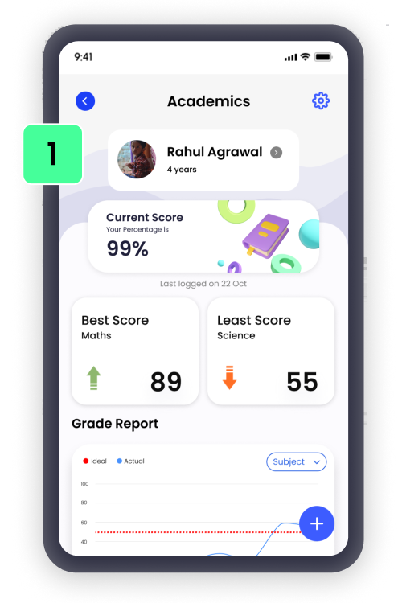
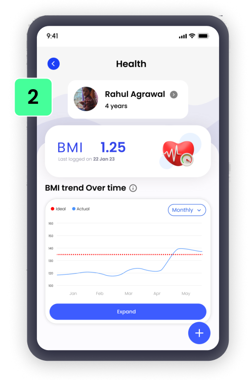
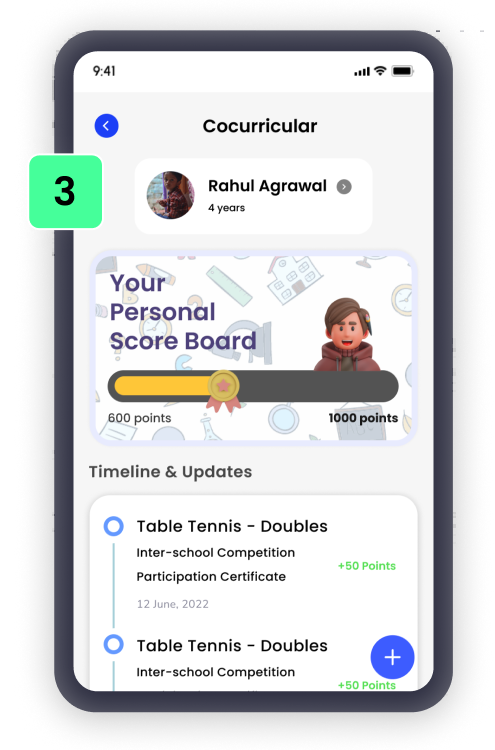
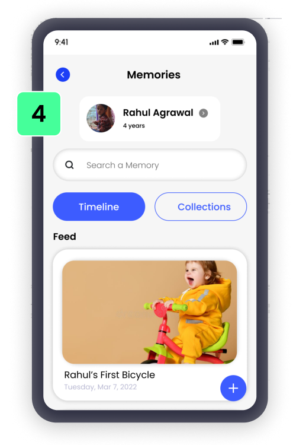
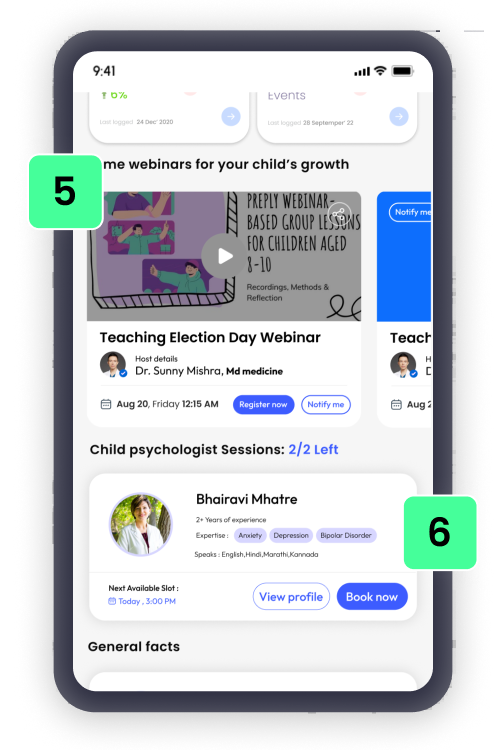

<div class="what_we_do_container">
  <div class="what_left">
    <div class="slider">
      <!-- slide 1 -->
      <div class="slide">
        
      </div>
    
      <!-- slide 2 -->
      <div class="slide">
        
      </div>
    
      <!-- slide 3 -->
      <div class="slide">
        
      </div>
    
      <!-- slide 4 -->
      <div class="slide">
        
      </div>
    
      <div class="slide">
        
      </div>
    </div>
  </div>
  <div class="what_right">
    <div class="txt_wrap">
      <div class="main_txt">What we do?</div>
      <div class="what_des">India’s First <span class="des_bold">AI based</span> data driven career<br> <span class="des_bold">decision making</span> platform</div>

      <div class="key_points">
        <div class="left_points">
          <ul>
            <li><span class="number_key points_first">1</span> Academics</li>
            <li class="mid_key first_key"><span class="number_key points_first">2</span> Health</li>
            <li><span class="number_key points_first">3</span> Cocurricular</li>
          </ul>
        </div>
        <div class="right_points">
          <ul class="points_second">
            <li><span class="number_key points_second">4</span> Memories</li>
            <li class="mid_key second_key"><span class="number_key points_second">5</span> Webinars on life skills</li>
            <li><span class="number_key points_second">6</span> Child psychologist sessions</li>
          </ul>
        </div>
      </div>
      <itl-button [btnTxt]="'Know more'" (click)="navigateToOfferings()"></itl-button>
    </div>
  </div>
</div>

<!-- Slider container -->
